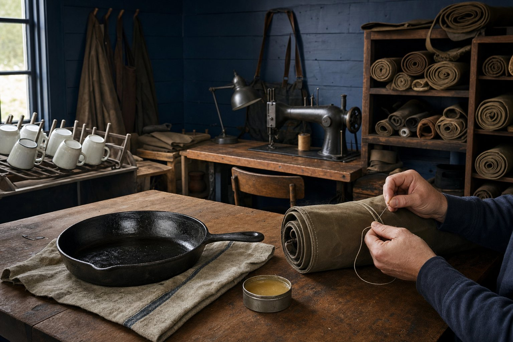

Home / Our story
Cook outside. Keep the good gear.

Bramble Supply makes camp-kitchen gear for cooking outdoors, over a fire or a camp stove. We build it to earn smoke, scratches, and a permanent place in your kit.
It started with a rattling camp box
Rowan Pike spent nine seasons cooking for trail crews and river trips. Feeding 12 hungry people a night off a fire grate teaches quick lessons: handles get hot, wind finds every weak flame, and flimsy gear has impeccable timing. Rowan got tired of pans that dented and warped, tools that melted, and camp boxes that rattled apart before the next put-in.
In 2019, Rowan set a secondhand sewing machine in a converted hay barn outside Hood River, Oregon, and began making waxed-canvas utensil rolls. The rolls kept the small tools quiet and ready. The carbon-steel skillet came next. Bramble grew from there, one useful object at a time.
Made where the know-how lives
We are a team of 9. We design, test, pack, answer questions, and sew every canvas roll in the Hood River barn. We do not pretend that one workshop should make everything.
- The Camp Skillet and Folding Fire Grate are spun or formed and riveted by a family-run metal shop in Ohio.
- Forged Ember Tongs are hand-forged by a blacksmith in Oregon.
- Our enamelware comes from a third-generation enamel works in Portugal, where glass enamel is fired over a steel core and finished with a rolled stainless rim.
- The Trail Kettle is made in Taiwan from 18/8 stainless steel by a long-time partner factory. It is good work, and we are glad to say where it comes from.
What we stand for
Built for the long haul
Buy once. Repair when you can. Pass it on. Our guarantee reflects that idea, and our first answer to rust or a tired finish is usually care, not replacement.
Leave it better
We practice Leave No Trace, pack it in and pack it out, and give 1% of sales to trail-maintenance crews in the Pacific Northwest. Good campsites and working trails do not maintain themselves.
Honest gear
We say where things are made. We also say what they cannot do. Carbon steel is not dishwasher safe. Enamel can chip. Soot happens. Reliable gear does not need a tall tale.
Come by the barn
Our small pickup counter is open Saturdays from 10–2 at 1140 Orchard Road, Hood River, OR 97031. It is a working barn, not a grand showroom, but the coffee is usually on. For questions or pickup help, contact us.